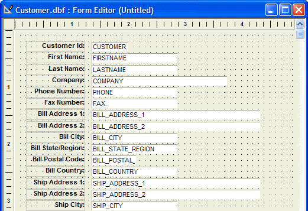
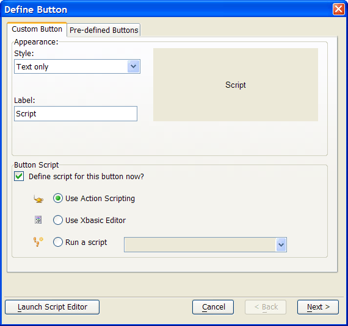
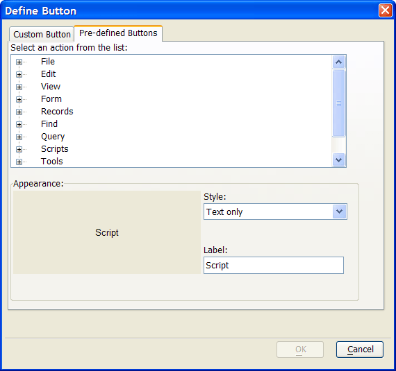
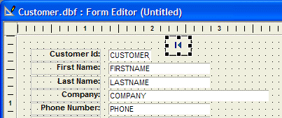
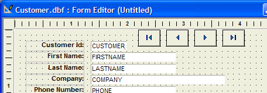
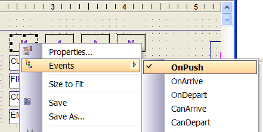

Pre-Defined Actions
When you put a button on a form, Alpha Anywhere let's you define the Action for the button in one of three ways. You can:
Pick a pre-defined Action
Use the Action Scripting Editor
Use the Xbasic Code Editor
If you want a very simple button that performs a single step, the "Pre-Defined Actions" are perfect. Every command appearing on the Form menus is available as a Pre-Defined button. For example, put four buttons on a form to navigate to the first, previous, next and last record.
Activate the Control Panel.
Select the Tables/Sets tab.
Right-click the "Customer" table and select Open Default Form.
Click the Design button to switch to Design Mode.
Your screen should now look like this:

The Button Object tool in the Toolbox will place a button on the form. If you don't see the Toolbox, click Toolbox on the View menu.
Select the Button Object tool on the Toolbox.
While holding down the left mouse button, draw a small button on the form to the right of the Customer Id field. When you release the mouse, the Define Button dialog box appears:

Click the Pre-defined Buttons tab on the dialog box. The following list appears. This list exactly mirrors the form menus available when you're viewing a form.

Click the + icon to expand the "Records" category.
Select "First" record and click OK. Alpha Anywhere puts a button on the form, as shown below:

Repeat these steps three times, selecting the "Previous", "Next" and "Last" record commands. Your form should now look like this:

Click the Save button to save the form and name it "Navigate."
Click the Form View button to switch to Form View Mode and test your buttons.
Put the form back into Design Mode by clicking the Design button.
Right-click the first button (the First Record button), select Events and OnPush.
 Note : The Events right-click
menu lists the various events for the current object (i.e. the button
that you have selected). Note that only the OnPush
event appears in bold type. That's because the OnPush
event has already been defined.
Note : The Events right-click
menu lists the various events for the current object (i.e. the button
that you have selected). Note that only the OnPush
event appears in bold type. That's because the OnPush
event has already been defined.

The Code Editor opens and shows the script associated with the button's OnPush event.
This should look familiar. A Pre-Defined button action is a short cut for creating a simple action script with one action. The action is "Select Action from the Form Menu".
Pay particular attention to the name of the tab. You assigned the name "Navigate" to the form when you saved it. The name of the button object is "Button1." The event name is OnPush. Alpha Anywhere automatically assigned the button object name when you drew the button on the form.
 Note : You are free
to change the name of any object on a form by right-clicking the object
and selecting Properties... > Setup. and
changing the Object Name.
Note : You are free
to change the name of any object on a form by right-clicking the object
and selecting Properties... > Setup. and
changing the Object Name.
See Also